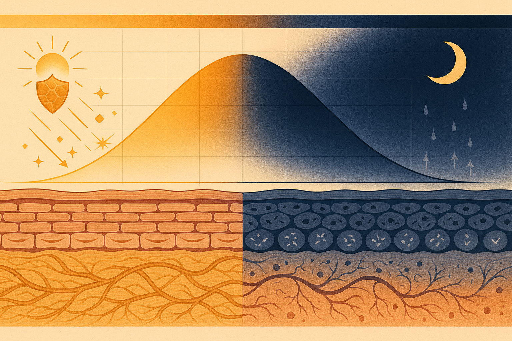
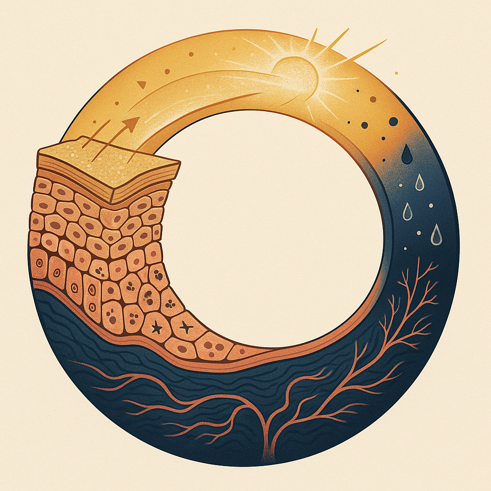

Review below. Reply approve to publish the Facebook post, or tell me edits.

Your skin works two shifts a day. Most routines fight the schedule.
By day it defends. By night it repairs. Once you know that, the useful question stops being what expensive thing do I add and becomes when do I do the simple things I already own. So before you buy another serum, it is worth learning what your skin is already doing on its own timetable.
If you read nothing else, pin these to the bathroom mirror.
Now the why.
Yes, and the mechanism has a name. It is called skin chronobiology, and it works through peripheral clock genes. These are the same circadian genes that govern your sleep-wake cycle, except copies of them live right inside your skin cells: the ones that build your outer barrier, and the fibroblasts deeper down that make collagen and elastin. Your skin does not wait for a signal from your brain. It runs its own timetable.
By day, your skin is on defence. The barrier (the outermost layer that holds water in and keeps irritants out) is at its strongest. Sebum output climbs and antioxidant activity peaks, which helps the skin brace against the two big daytime stressors: UV from sunlight and airborne pollution. Daytime skin is a shopfront with the shutters up and someone standing at the door.
By night, the shutters come down and the stock-taking begins. Cell turnover, the steady process of shedding old surface cells and pushing new ones up, runs faster in the evening and overnight. Blood flow to the skin rises, delivering more of what repair needs. And the barrier itself becomes more permeable, which is why moisture escapes fastest in the small hours. Your skin is quite literally more open at 2am than at 2pm.
None of this is fringe science. The circadian control of skin function, from barrier permeability to cell proliferation, is well documented in the dermatology literature. Your skin has a body clock, and it is not subtle about it.
Here is the honest answer: an LED mask is not a shortcut and not medicine. It is a cosmetic device. Used consistently over weeks, LED light is intended to support the look of tone and radiance, and the LED light therapy benefits people notice are gradual, not overnight. It is closer to flossing than to a facelift.
Where it fits is the interesting part. Because your skin favours recovery at night, red light therapy at home slots naturally into the evening wind-down: a low-effort ten-minute step at the exact time the biology is already leaning that way. That is genuinely all it asks of you. To be straight with you, this unit does not include near-infrared, and no light device restores dermal thickness or replaces sunscreen. It is a small maintenance ritual, not a repair engine.
Redermis is new. We are still earning our reviews, and we will not invent any. So we would rather you leave this page with the timing lesson than with a shopping list. The clock matters more than the cart.
Your skin runs two shifts: defence by day, repair by night. Work with that rhythm instead of drowning it in products. Protect in the morning, support the barrier at night, and slot any slow, gentle step into your evening wind-down. Simple, timed well, repeated forever. That is the whole game.
If you ever want a closer look, the mask and the full spec are here.

Your skin runs on a clock. So here is the question: what is the one step you would never skip at night?
Because timing matters more than most people think. By day, skin stands guard. The barrier braces, antioxidant defences come up, and its whole job is guarding against sun and pollution. By night, it stops guarding and starts rebuilding: cell turnover climbs, blood flow rises, and it quietly loses more water than at any other time. That is why skin can feel tight by morning.
Quick honesty first: we are a new Australian brand, still earning our reviews, so take this as education, not a sales pitch.
The useful takeaway is timing, not shopping. The two cheapest wins are SPF in the morning, when the guard is up, and something on damp skin at night, when the leak is happening. Slow, gentle steps belong in the evening wind-down too, when the biology is already on your side. Red light fits there for some people as a calm evening ritual: a cosmetic device, not medicine.
You do not need more products. You need better timing. Save this one for tonight.
Nothing to sell you today. If you are curious, the mask and full spec live here: https://redermis.com.au/products/red-light-therapy-face-neck-mask
Morning person or night person? Comment AM or PM.
**Hashtags:** #skincareroutine #skinlongevity #circadianrhythm
**IMAGE PROMPT:** Editorial science illustration in the style of Scientific American: a single large circular 24-hour clock-dial diagram rendered as a cross-section of skin strata bent into a ring. The daylight half of the ring shows a raised, shield-like outer stratum with stylised sun rays and drifting particle dots deflecting off its surface; the night half shows the same strata softened and open, with small dividing cell clusters, branching capillary lines glowing warmly beneath, and fine droplet motifs rising outward. A slender gradient arc sweeps around the dial from warm gold (day) to deep indigo (night). Clean flat vector-scientific style, precise linework, layered geological-style strata, muted premium palette of ink navy, warm gold and soft coral on an off-white background. No text, no numerals, no people, no devices, no products.
That tight, papery feeling on your face first thing in the morning? That is your skin telling you what shift it just finished.
Two shifts. One clock.
By day, your skin is on defence. The barrier tightens up, sebum and antioxidant levels peak, and everything is geared to handle sun, pollution and whatever the commute throws at it.
By night, it switches to repair. Cell turnover rises. Blood flow to the skin increases. Water loss is actually at its highest overnight, which is why your face can feel tight in the morning.
Here is the part worth saving: the win is timing, not more products.
Morning: protect. SPF is the whole job.
Night: support. Moisturiser on slightly damp skin, and slot any slow, gentle habit into the wind-down, when the biology is already leaning that way.
A quick note on us: Redermis is a new brand. We are still earning our reviews, and we would rather tell you that than pretend otherwise.
If you use an LED mask, evening is the natural home for it. Ten minutes as part of the wind-down, supporting the look of tone and radiance over weeks, not days. It is a cosmetic device, not medicine, and it works with your routine rather than replacing it.
Save this for your evening routine.
No offer today, just the science. Full spec via the link in bio if you want a closer look.
AM or PM person? Drop it below.
**Hashtags:** #nightskincare #skinbarrier #circadianrhythm #skincareaustralia #skincarescience #skinlongevity
IMAGE PROMPT: Elegant editorial science illustration in the style of Scientific American or New Scientist, vertical 4:5 composition split by a soft diagonal from day (upper left) into night (lower right). LEFT DAY HALF: warm golden light shafts angle down onto a histology-accurate layered skin cross-section, the stratum corneum drawn as a firm brick-and-mortar corneocyte lattice deflecting small radiant particles off its surface, antioxidant sheen across the top. RIGHT NIGHT HALF: deep indigo and violet tones over the SAME accurate cross-section (nucleated epidermal strata, a basement membrane, and a dermis with woven gold collagen and elastin fibres and looping capillaries) now regenerating from below: dividing keratinocytes with mitotic figures, fresh collagen fibres being laid down, and fine droplet flow-lines rising like slow currents. A thin concentric clock-like ring of geometric light unifies the two halves at the centre, purely abstract, no numerals. Clean structured linework, muted premium palette (ink navy, warm gold, soft coral) with subtle grain, generous negative space, legible diagrammatic feel. No text, no numerals, no people, no faces, no products, no devices, no technology.
**Title:** When You Do Skincare Matters More Than What You Add (Your Skin's Night Shift, Explained)
**Description:**
Timing beats adding another product. Your skin runs on a clock: defence by day, repair by night.
The simple three-step version. AM: sunscreen and antioxidants, while the barrier is up. PM: moisturiser on damp skin, when water loss peaks. Evening: slot slow, gentle steps into the wind-down, when the biology already favours recovery.
Red light therapy at home lives in that evening window as a calm ten-minute ritual. It is a cosmetic step, not a medical treatment, and the LED light therapy benefits are gradual. A quick note: we are a new brand still earning our reviews, so take this as education. Working with your skin's rhythm can matter as much as what you put on it.
**Hashtags:** #SkinCircadianRhythm #RedLightTherapy #LEDFaceMask #NightSkincareRoutine #SkincareScience
**Image:** Reuses the Instagram image.